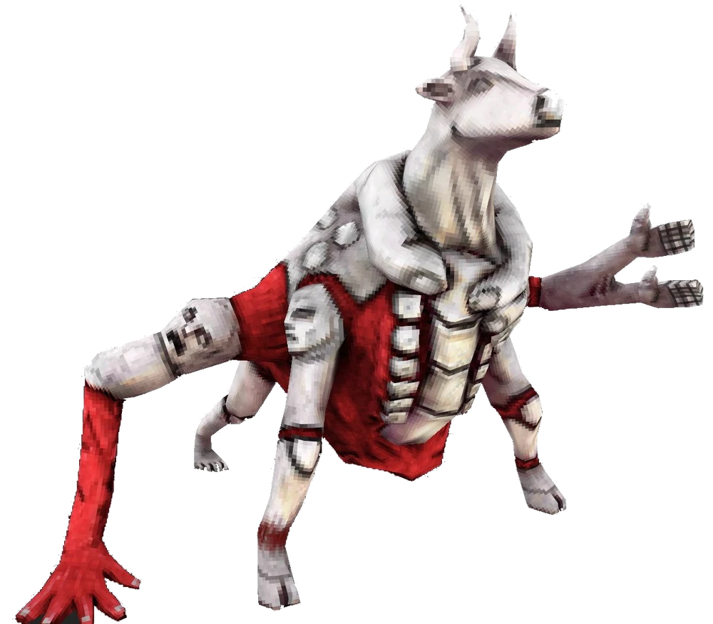
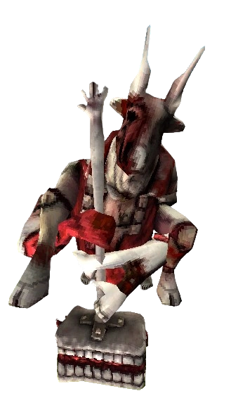

The Minotaur is a relentless and imposing foe in ULTRAKILL. Featuring two distinct phases, this boss challenges players with fast-paced combat and high-damage attacks. This guide offers strategies to defeat the Minotaur efficiently.

Phase 1: Cart Chase
The first phase of the fight takes place on moving carts with environmental hazards. Falling off the carts or colliding with obstacles deals significant damage, making mobility key.
Key Attacks
Acid Puddle: Creates an acid pool that deals damage over time. Stay clear of it.
Shoulder Arm Swings: A three-hit melee combo that can be dodged or parried.
Back Swipe: A quick attack aimed at punishing players who attempt to flank.
Hammer Slam: A heavy vertical attack that can destroy the cart you're on.
Stay on the carts and focus on avoiding the environmental dangers while chipping away at the Minotaur’s health.
Phase 2: Rematch
The second phase takes place in a larger arena, where the Minotaur becomes even more aggressive. Its attacks become deadlier, but the open space gives you more room to maneuver.

Key Attacks
Hammer Flurry: A fast series of hammer swings that cover a wide area.
Ground Slam Explosion: A high-damage attack that creates a lingering red energy burst.
Acid Cloud/Pool: An upgraded version of the acid attack, dealing more damage over time.
Charge: A high-speed rush attack that can be parried or dodged.
Use the larger arena to maintain distance and target the Minotaur’s weak points during attack cooldowns.
Strategies & Tips
Phase 1: Lure the Minotaur to the central cart to limit its movement. Use ranged explosives for consistent damage.
Phase 2: Aim for its underbelly and face. Parrying the Charge attack deals significant damage and creates openings.
Weapon Choices: The Sharpshooter Revolver and Malicious Railcannon are excellent for hitting weak spots.
Stay Mobile: Keep moving to avoid wide-reaching attacks and acid hazards.
Healing: Take advantage of attack cooldowns to heal if needed.